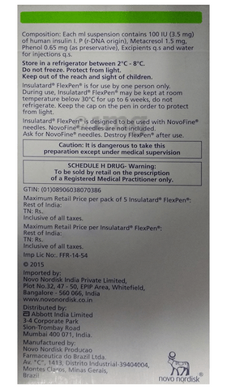

- 
Insulatard 100IU/ml Flexpen
-
Manufacturer
- Novo Nordisk India Pvt Ltd SALT COMPOSITION
- Insulin Isophane (100IU/ml) SALT SYNONYMS
- NPH, Neutral protamine Hagedorn STORAGE
- Store in a refrigerator (2 - 8°C). Do not freeze.
INTRODUCTION
DescriptionInsulatard 100IU/ml Flexpen is used to improve blood sugar control in adults and children with type 1 and type 2 diabetes mellitus. It is an intermediate-acting type of insulin that helps to lower blood sugar levels and reduce the chances of developing serious complications of diabetes.
Insulatard 100IU/ml Flexpen is often prescribed along with short-acting insulin or other oral diabetes medicines. Your doctor or nurse will teach you the correct way of injecting it under the skin. Don’t stop taking it unless your doctor tells you to. It is only part of a treatment program that should also include a healthy diet, regular exercise, and weight reduction as advised by your doctor.
Do not use this medicine when you have low blood glucose levels (hypoglycemia). Tell your doctor if you have ever had kidney, liver or heart problems before starting treatment. Pregnant or breastfeeding women should also consult their doctor as the dose may need to be changed.
USES OF INSULATARD SUSPENSION FOR INJECTION
Diabetes mellitus (Type 1 & Type 2)
Key Benefits
Insulatard 100IU/ml Flexpen is an intermediate-acting type of insulin that is usually used along with other diabetes medication for controlling blood sugar levels. It replaces the insulin that is normally produced in the body. This helps the glucose get into your muscle and fat cells so your body can use it for energy. It also decreases glucose production in the liver.
Lowering of blood sugar level helps reduce the risk of getting any of the serious complications of diabetes such as kidney damage, eye damage, nerve problems, and loss of limbs. Learn exactly how, where, and when to inject this insulin for it to be most effective. Take it regularly along with proper diet and exercise for a normal, healthy life.
Common side effects of Insulatard
Directions for Use
Your doctor or nurse will give you this medicine. Kindly do not self administer.